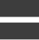
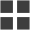
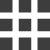

<div class="blog__content">
  <div class="layout__content">
    <ul class="layout__filter-list">
      <li>
        
      </li>
      <li>
        
      </li>
      <li>
        
      </li>
    </ul>
  </div>
  <div class="main__content" [@popOverState]="stateName">
    <ul
      class="blog-list__list"
      [ngStyle]="{
        'grid-template-columns':
          'repeat(' + list_display_col + ', minmax(0, 1fr))'
      }"
    >
      <li class="list_post_item" *ngFor="let post of filteredPosts | async">
        <app-post-card [post]="post"></app-post-card>
      </li>
    </ul>
  </div>
</div>
